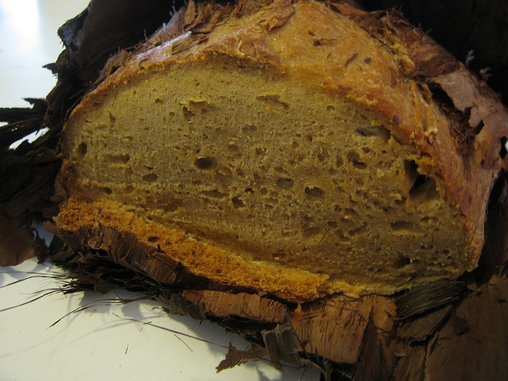

Damper
Damper is a thick homemade soda bread traditionally prepared by early European settlers in Australia.[1] The bread is different to bush bread, which has been made by Indigenous Australians for thousands of years and was traditionally made by crushing a variety of native seeds, nuts and roots, mixing into a dough, and then baking the dough in the coals of a fire. [Wikipedia]
Ingredients
- flour
- water
- salt
- baking soda or beer
Recipe
- Step 1
- Step 2
- Step 3
- Step 4
- Step 5
- Step 6